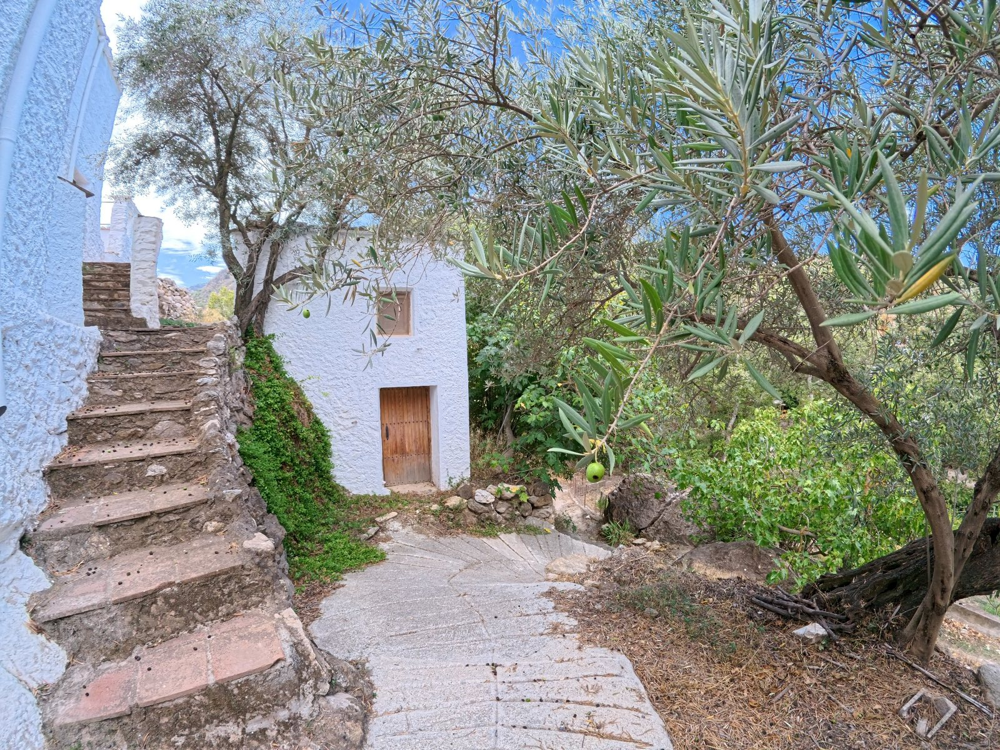

01
Contenido & Storytelling
Creamos fotografía, vídeo y relatos audiovisuales para negocios y proyectos vinculados al territorio que quieren mostrar mejor quiénes son, qué hacen y qué los hace diferentes.
Ponemos en valor la Alpujarra y el Valle de Lecrín y ayudamos a negocios, alojamientos, restaurantes, instituciones y proyectos rurales a contar mejor quiénes son y qué ofrecen.
Creamos fotografía, vídeo y relatos audiovisuales para negocios y proyectos vinculados al territorio que quieren mostrar mejor quiénes son, qué hacen y qué los hace diferentes.
Diseñamos y producimos contenido de forma periódica para proyectos que quieren mantener una comunicación coherente, profesional y conectada con su identidad.
Desarrollamos contenidos, campañas e historias para ayuntamientos, asociaciones, instituciones y entidades que trabajan por la divulgación, la memoria y la puesta en valor del territorio.

Alpujarra y Valle de Lecrín nace con una idea sencilla: poner en valor un territorio que merece ser más conocido.
Recorremos pueblos, recuperamos memoria y patrimonio, conocemos a las personas que viven y trabajan en la zona y mostramos alojamientos, gastronomía, proyectos, tradiciones y formas de vida vinculadas al territorio.
Lo hacemos a través de vídeo, fotografía, podcast, entrevistas, investigación y divulgación, construyendo una comunidad especializada alrededor de la Alpujarra y el Valle de Lecrín.
Nuestro objetivo es conectar a quienes viven aquí, a quienes trabajan por el futuro del territorio y a quienes quieren descubrirlo.
Un territorio conectado por su paisaje, su historia y quienes lo mantienen vivo.
Personas, negocios, pueblos, gastronomía, patrimonio e historias que forman parte de la identidad de la Alpujarra y el Valle de Lecrín.
Las piezas definitivas de portfolio se incorporarán en la siguiente revisión.
Si tienes un alojamiento, restaurante, negocio, proyecto o iniciativa vinculada a la Alpujarra y el Valle de Lecrín y crees que podemos trabajar juntos, cuéntanos tu idea.